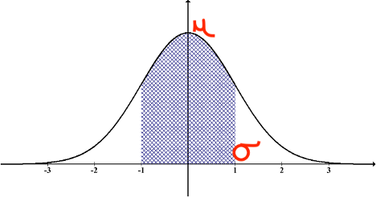
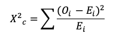
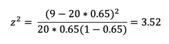

4.9- Distribuciones Continuas
En este tipo de distribuciones los valores posibles que una variable aleatoria puede tomar son una secuencia de muchos valores infinitamente consecutivos. Es decir no hay pausa entre uno y otro, por ejemplo: peso corporal de los animales, el consumo de alimento (en kgs, lbs etc), lostiempos laborales de los operarios (horas, minutos, segundos).
Principales caracerísticas:
- - La variable aleatoria puede tomar un valor infinito de valores consecutivos.
- - No se puede agregar el valor de valores individuales para hacer un intervalo por su condición de infinito.
- - Puede ser expresada con una gráfica o una función continua.
- - La grafica consiste en una curva suave (forma acampanada).
- - La posibilidad de un intervalo es calculada con integrales.
P(Y=y) =0 para cualquier valor individual (porque los valores son consecutivos) y
P(Y < y) = P(Y ≤ y)
A tener en cuenta:
PROBABILIDAD DE DENSIDAD DE LA PROBABILIDAD:
es una expresión estadística que define la probabilidad de que una variable aleatoria tome un determinado valor.
FUNCION DE LA DISTRIBUCION ACUMULATIVA:
es una expresión que especifica la probabilidad de que una variable aleatoria sea menor o igual a un valor dado.
4.10- Distribución Normal
Es la distribución mas común dentro de los eventos naturales y se caracteriza por que los datos se distribuyen en forma acampanada (campana de Gauss), la función de la distribución es:
Y~ N( μ,σ)
Donde la variable aleatoria Y toma valores aproximados a una distribución normal. Los parámetros de la distribución son, la media o valor central (μ) y la la desviación típica o estandar (σ).
La distribución normal adapta una variable aleatoria a una función que depende de la media y la distribución estándar. Una variable aleatoria continua puede tomar cualquier número real. La distribución normal es simétrica es decir el valor de la mediana, la media y la moda coinciden matemáticamente. La distribución normal tiene forma de campana y los valores que están alrededor de la media son los que tienen mayor probabilidad de aparecer. El 68% de los valores deberían estar dentro del intervalo:
μ-σ y μ+σ
Curva de la distribución normal, indicando la media y +1 y -1 Desviación Estándar

Características de la distribución normal:
- - La distribución de medias muestrales con suficientes tamaños de muestras puede ser aproximadas a la distribución normal.
- - Todas las estadísticas computables son elegantes.
- - Frecuentemente usada en análisis de regresión.
- - Es fácil llevar un buen registro.
Un ejemplo típico que tenemos de distribución normal es la producción de leche, la siguiente gráfica muestra la distribución de la producción de leche ajustada a 305 días (resultados en libras), durante 5 años para un hato lechero norteamericano.
Como vemos la curva de la distribución se asemeja muchísimo a la curva de la gráfica que describe una distribución normal, con una media central, la forma de una campana y la mayoría de los datos ubicados hacia el centro. Para esta muestra de producción de leche la media es de 30088 libras y la desviación estándar es de 4571 libras. Entonces el 66% de los datos va a estar entre mas una y menos una desviaciones estándar, es decir el 68% de los animales tiene una producción por lactancia de entre 25517 y 34659 libras.
Cómo calcular una probabilidad de distribución normal en Excel
Si conocemos la media y la desviación estandar podemos calcular probabilidades de los diferentes valores. Por ejemplo, cual es la probabilidad de una producción igual o inferior a 38000 libras, sabemos que este valor está por encima de la media y también que es superior al valor de la media mas una desviación estándar, pero no sabemos exactamente que probabilidad hay de que y este por encima o por debajo, para ello podemos acudir a Excel de manera similar a como hicimos con las distribuciones de Poisson y Binomial.
La función para calcular la distribución es DISTR.NORM o NORM.DIST en inglés. Primero se debe incluir el valor x o sea el valor en el cual estamos interesados en conocer su ubicación, la media que ya conocemos, la distribución estándar que también conocemos y finalmente la función cumulativa a los cual escribimos verdadero o true si estamos trabajando con un Excel en inglés.
Como vemos en el recuadro, el resultado es 0.958 esto quiere decir la probabilidad de tener valores iguales o menores a 38000 libras es del 95.8%. Esto es muy útil a la hora de tomar decisiones. Supongamos que deseamos seleccionar animales cuya producción esté por encima del 95% de la población. Entonces el criterio en este caso sería lactancias iguales o superiores a 38000 libras de leche.
Ahora, si por el contrario queremos saber cual es la probabilidad de una lactancia igual o inferior a 19000 libras en la misma población (misma media y desviación estándar). Seguimos los mismos pasos previamente descritos y encontramos que el resultado es 7.6%. Esto significa que la probabilidad es inferior al 7.6%. Si hacemos el cálculo con 30088, vamos a ver que el resultado es justo el 50%. Es decir la media hay 50% de probabilidad de que el valor sea superior o inferior.
Explicación de la distribución normal
4.11- Distribución Normal Estándarizada
Dado que la distribución normal no es una sola sino un grupo de distribuciones con una media μ y una desviación estándar σ diferentes y por ello podrían existir un numero variado de distribuciones normales. La solución para ello es entonces estandarizar transformando cualquier distribución normal de manera que μ sea 0 y σ sea 1. Todas las distribuciones pueden convertirse a la estándar restando la media de cada observación y dividendo por la desviación estándar:
z= (y-μ)/σ
Donde:
- z= Número de desviaciones estándar a las que se encuentra el valor separado de la media.
- y= Valor de interés. Eje: cantidad de leche producida en la lactancia.
- μ = Media de la distribución normal.
- σ = Desviación estándar.
Si continuamos con el ejemplo de las lactancias, el valor de 38000 libras estandarizado seria:
z = (38000-30088)/4571=1.73
Esto significa que 38000 lb por lactancia está 1.73 desviaciones estándar por encima de la media. Si hacemos el mismo ejercicio con 19000 entonces el valor z es de -2.42. Es decir que 19000 esta - 2.42 desviaciones estándar por debajo de la media. La estandarización será de mucha utilidad como veremos mas adelante pero es muy conveniente para poder utilizar una tabla conocida por sus valores cumulativos de distribución llamada la tabla Z o tabla de la distribución normal.
Razones para estandarizar los valores:
- - Comparar grupos de datos con diferente distribución normal.
- - Para detectar normalidad en la distribución de los datos.
- - Detectar valores atípicos.
- - Crear intervalos de confianza.
- - Probar hipótesis.
- - Realizar análisis de regresión.
Explicación de la distribución normal estandarizada
4.12- Distribución continua t-Student
La Distribución T Student es una distribución normal que representa una pequeña muestra con una distribución normal y se desconoce la desviación típica. Estima el valor de la media de una muestra pequeña extraída de una población que sigue una población normal, donde La variable aleatoria Y sigue una distribución t con k grados de libertad:
Y∼t(k)
La distribución t sigue el modelo de una gráfica con forma de campana (similar al de la distribución estándar), pero los extremos son mas gruesos que la distribución normal. Se utiliza comunmente cuando se examina una pequeña muestra de datos que sigue una distribución normal. Especialmente menor a 30. Un ejemplo de la utilidad de la distribución t-Student es si queremos comparar si hay diferencia significativa en el pesajde de bovinos que se han alimentado con diferentes dietas. No debemos olvidar que esta distribución la usamos cuando tenemos solo unos pocos datos especialmente en experimentos donde la cantidad de muestras son limitadas.
Por ejemplo de la totalidad de lactancias que utilizamos para trabajar con la distribución normal (n= 18640), seleccionamos completamente al azar 29 muestras de la variable aleatoria Y (lactación en lb) que sigue la distribución t-student con 28 grados de libertad. Los grados de libertad se calculan restando 1 del tamaño de la muestra (29 – 1 = 28). El gráfico muestra el histograma de frecuencias de las 29 muestras. Como vemos similar a la distribución normal las observaciones con mayores frecuencias están hacia el centro, al contrario de los que tienen menos frecuencias que se encuentran hacia los extremos.
Esta distribución se utiliza básicamente para crear intervalos de confianza y probar hipótesis con poblaciones normalmente distribuidas cuando las poblaciones muéstrales son pequeñas. Es particularmente útil cuando no tenemos suficiente información o es muy costoso obtenerla. Por todo lo demás igual a la distribución Normal, la distribución t-Student tiene extremos mas gruesos y un pico mas bajo. Esto es un reflejo del mayor nivel de incertidumbre, ocasionado por el pequeño tamaño de la muestra.
4.13- Continuas-Distribución Chi-Cuadrado
La distribución X2 se usa para dos tipos de pruebas: primero para determinar si los datos de la muestra se ajustan a los de la población. Segundo, se usa la prueba de independencia Chi cuadrado cuando se comparan dos variables categóricas en una tabla de contingencia para ver si están relacionadas o no. La distribución de X2 al igual que la distribución t-student depende del tamaño de la muestra. Cuanto mas grande sea el tamaño de la muestra mas se asemejara a la distribución normal. Sin embargo esta curva se caracteriza por ser asimétrica y sesgada hacia un lado (izquierda o derecha). Los valores tabulados de la distribución chi-cuadrado se basan en los grados de libertad (df = n-1), tal como se hace con la distribución de valores de la tabla t-student.
Los valores de Y siguen aproximadamente la distribución Chi-cuadrado χ^(2 ) con k grados de libertad.
Y~χ2(k)
La fórmula usada en la prueba Chi-cuadrado es:

Básicamente lo que hace chi-cuadrado es mostrar la diferencia existente entre un valor observado y un valor esperado con un solo número si no hubiera ninguna relación en la población. Un valor de chi-cuadrado bajo significa una alta correlación entre los dos grupos de datos (observados y esperados). El proceso para determinar si hay una diferencia significativa básicamente se hace de manera similar que con la distribución de t-student. Si el valor de chi cuadrado es mayor que el valor crítico entonces hay un valor significativo. Ojo la prueba de chi cuadrado no puede ser usada en porcentajes, solo puede ser usada con valores reales no en porcentajes ni en proporciones. Es importante anotar que esta es una fórmula si no dificil si es larga de calcular por la sumatoria de cada uno de los valores críticos de X2, sin embargo la tecnología existente nos facilita estos cálculos. En este caso seguiremos utilizando la hoja electrónica Excel.
4.13.1- Bondad del ajuste usando la prueba chi-cuadrado:
Se usa para saber si la muestra se ajusta a los valores esperados. Por ejemplo, si vamos a comprar un lote de 20 novillas al ojo y el vendedor nos asegura que los animales han sido todos inseminados. Basados en información previa se tiene estimada una tasa de preñez del 65% en esa finca, por lo cual podriamos esperar aproximadamente 13 novillas preñadas. Sin embargo, al hacer la palpación encontramos que solo 9 de las 20 novillas resultaron preñadas. El comprador desea estimar si fue engañado o puede ser normal teniendo en cuenta la tasa de preñez. Para ello vamos a comparar el valor obtenido con el valor esperado usando la distribucion chi-cuadrado con un 𝝰 del 5%. Para este caso vemos que la variable X sigue una distribución binomial ya que están o vacías o preñadas (fracaso - éxito) y el valor calculado z2 se aproxima a x2. La fórmula para calcular z2 es:
Donde: x es el valor observado, n el numero de repeticiones, p es la probabilidad. Entonces reemplazando:

En Excel lo podemos calcular de la siguiente manera:
El valor de z2 lo podemos calcular en Excel siguiendo la fórmula descrita anteriormente y que se muestra en la celda D8 del recuadro. El valor de chi-cuadrado de la tabla lo obtenemos con la función =CHISQ.DIST.RT se incluye el valor calculado de z2 y los grados de libertad, que en este caso es 1 (2-1). Como vemos el valor calculado es superior al valor de la tabla, por tanto podemos decir con 95% de confianza que el numero esperado de novillas preñadas es muy inferior al esperado y el vendedor no cumplió con lo prometido, por tanto hay que investigar que sucedió.
Explicación de la bondad del ajuste X2
4.13.2- Prueba de independencia usando la distribución X2
La manera mas sencilla de explicar si dos o mas variables cualitativas son independientes la una de la otra es con un ejemplo aplicado. Para ello vamos a trabajar con un proyecto de tenencia responsable de mascotas. Se está realizando un proyecto de esterilización de mascotas en el sur de Cali (Colombia) y para poder diseñar la campaña de divulgación e información, queremos saber si existe alguna relación entre el nivel de educación de los tenedores responsables y la esterilización de sus mascotas, esto con el fin de saber a que audiencia nos debemos dirigir. Para ello seleccionamos una muestra aleatoria entre los pacientes de varias clínicas veterinarias de la zona. La siguiente tabla de contingencia nos muestra como se dividen los datos de mascotas esterilizadas y no esterilizadas según el nivel educativo de sus tenedores.
Nuestra hipótesis nula es: H0 El nivel de educación de los tenedores no tiene nada que ver con el que las mascotas estén esterilizadas o no.
El siguiente paso es calcular los valores esperados para cada una de las casillas presentadas en la tabla de contingencia. Esto lo realizamos para cada categoría multiplicando el total de observaciones de la columna por el total de la fila y dividiendo por el total de observaciones. Por ejemplo el valor esperado para mascotas esterilizadas en el grupo que alcanzó solo hasta educación primaria seria el total de mascotas esterilizadas por el total de personas con educación primaria dividido por el total de observaciones = 153 * 79/284 = 42.55, calculamos entonces los valores esperados para cada casilla. Las sumatorias de las filas y las columnas deben ser iguales a los valores observados en la tabla de contingencia como se observa a continuación:
Una vez obtenidos los valores esperados podemos calcular el X2, para ello utilizamos la fórmula:
Haciéndolo paso a paso entonces calculamos el valor de cada grupo y posteriormente sumamos como se observa en la tabla.
El nivel de significancia es de 𝛼 = 5%, los grados de libertad se calculan: (numero de filas – 1)(numero de columnas -1) = (2-1)(4-1) = 3. El valor de p lo calculamos utilizando la función de Excel =CHISQ.TEST y seleccionamos para R1 = el conjunto de datos observados y para R2 = el conjunto de datos esperados. Los rangos de R1 y R2 deben tener el mismo tamaño y forma y solo pueden contener valores numéricos. Este valor también lo podemos obtener con la función =CHISQ.DIST.RT, para ello incluimos el valor de X2 y los grados de libertad.
El valor de significancia p 0.908 es mayor al alfa 0.05 por tanto no podemos rechazar la H0 , es decir con un 95% de confianza no existe diferencia en el nivel educativo para esterilizar las mascotas.
Explicación de la prueba de independencia de la distribución X2
Teorema central del límite
El teorema central del limite (TCL) nos dice que sin importar la distribución implícita de un conjunto de datos (binaria, exponencial, logística, etc.) la distribución de las medias de una muestra aleatoria de una población con varianza finita sería aproximada a una distribución normal. Además, la media de la distribución de la muestra seria igual a la media de la distribución original y la varianza seria n veces normal donde n es el tamaño de las muestras.
Porque es útil: El TCL permite asumir la normalidad de muchas variables diferentes. Es muy útil para calcular los intervalos de confianza, pruebas de hipótesis y análisis de regresión. De hecho, una de las razones por la que la distribución normal es tan común es porque siguiendo el TCL muchas variables convergen en la normalidad. Permite desarrollar pruebas, resolver problemas y hacer inferencias utilizando la distribución normal aun cuando la población no este normalmente distribuida.
Donde se observa: Dado que muchos conceptos y eventos son una suma o un promedio de diferentes efectos el TCL se aplica y se puede observar normalidad todo el tiempo. Por ejemplo, en análisis de regresión la variable dependiente es explicada a partir de la suma del error.
Por ejemplo la gráfica superior representa el histograma de frecuencia de 50 medias con n 50 observaciones cada de los resultados del recuento logaritmico de células somáticas en vacas lecheras. Como vemos en el gráfico las medias de esta medición tienen hacia una distribución normal, por tanto siguiendo el TLC podremos trabajar con las ventajas ofrecidas por la distribución normal.
Referencias
- * Distribución normal estándar, PDF. (Consultado 15 de marzo, 2021). Portal psicolearning https://psicolearning.files.wordpress.com/2014/10/d-normal-estc3a1ndar-apunte-alumnos.pdf
- * Glen Stephanie . "Chi-Square Statistic: How to Calculate It / Distribution" From StatisticsHowTo.com: Elementary Statistics for the rest of us! https://www.statisticshowto.com/probability-and-statistics/chi-square/
- * Ricardi Fernando, (Mayo, 2011). Distribución Normal. MedWave - estadística aplicada a la investivación en Salud
- * Rodó Paula ,(05 de noviembre, 2019). Distribución t de Student. Economipedia.com
- * Rodó Paula (10 de noviembre, 2019). Distribución normal. Economipedia.com
- * Zaiontz Charles. Independence Testing. Real Statistics Using Excel. https://www.real-statistics.com/chi-square-and-f-distributions/independence-testing/